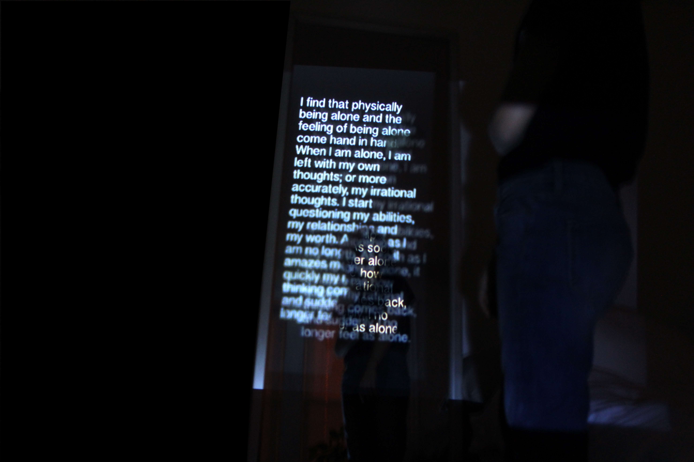
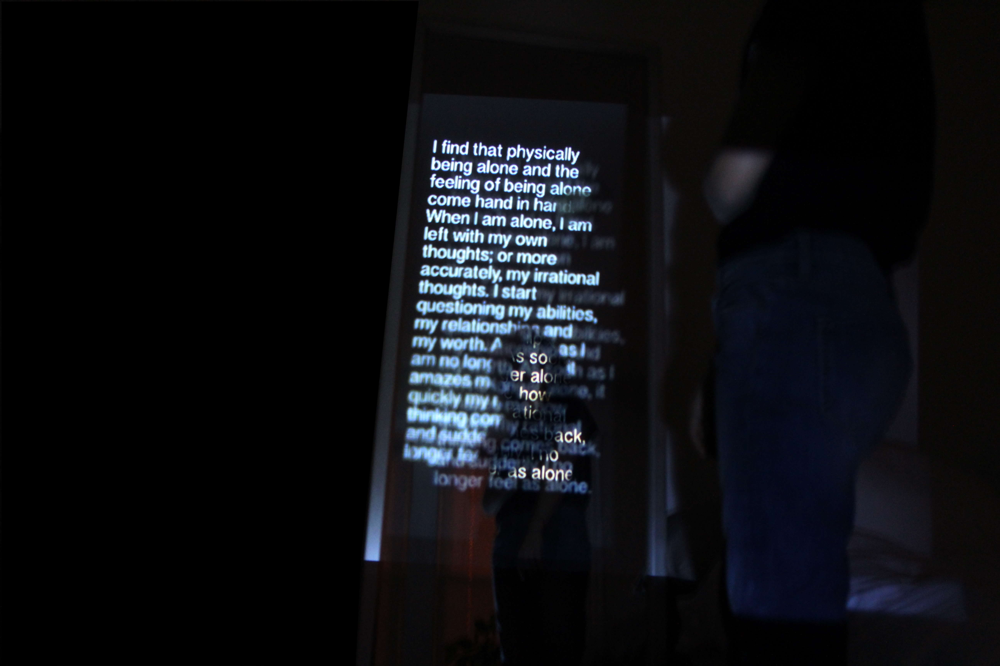

Something I have personally struggled with here at college is always feeling like I need to be doing something. Loneliness often overwhelms and saddens me if I am not in the presence of people. It had me wondering if other students also felt this way. So I created a survey and had friends anonymously write in about an experience they have had or their overall opinion on the topic of loneliness in college. The results startled me, and paired with a projector as the mode of delivery, I knew this project would be powerful. By projecting words on the person's body it speaks to the fact that these should be open conversations that people can have, but instead thoughts often overwhelm people and they keep them bottled up inside.


 
